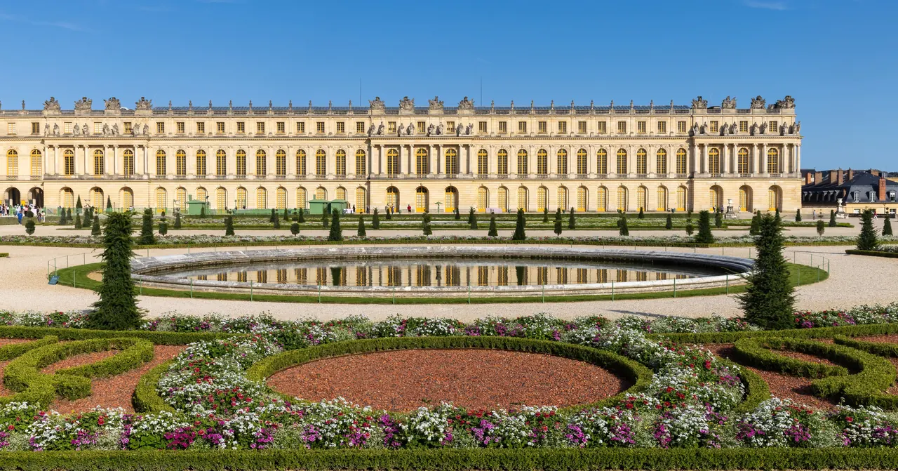

Versailles

| 지역 | Paris |
|---|---|
| 등급 | 우선 추천 |
| 언제 | 일정에 배정된 날을 시간표에서 찾지 못했다 |
| 상세 | 챕터 본문에서 보기 |
| 지도 | Paris 실행지도 · 핀 이름 Versailles |
참고
오프라인입니다. 위키백과와 지도 링크는 연결되면 다시 동작합니다.
Day 36 (10/3 토)
⚠ 왕실 예배당 특별 개방을 놓친다
2026년 여름 베르사유 궁전이 왕실 예배당과 부속 성구실을 7월 7일부터 9월 27일까지 예외적으로 개방한다. 본당, 그림 천장, 성구실, 석재 상감 등을 볼 수 있는 기회다.
9월 27일에 끝난다. Day 36은 10월 3일이다. 엿새 차이로 못 본다.
이 사실을 알고 가야 실망하지 않는다. 그리고 혹시 연장되는지 출발 전 확인할 가치가 있다 연장 여부 확인.
판단 기준
| Versailles | 15구 생활일 | |
|---|---|---|
| 소요 | 하루 | 반나절 |
| 혼잡 | 매우 높음 | 없음 |
| 대표성 | 절대왕정의 정본 | 없음 |
| 체력 | 큼 | 작음 |
| 이 체류의 목적 | 어긋남 | 부합 |
43일 중 36일차다. A/B 선택으로 남긴 것이 옳다. 현장에서 체력으로 결정한다. 다만 베르사유를 택한다면 정원까지 보려 하지 말 것. 궁전만으로도 하루가 찬다.
실용
| 항목 | 값 |
|---|---|
| 접근 | RER C로 약 35분 |
| 휴관 | 월요일 확인 — Day 36은 토요일이라 무관 |
| 예약 | 시간지정제 확인 |
| 혼잡 | 토요일은 최악에 가깝다 |
대표성 1순위
왜 추천하는가: 프랑스 왕정·정원·파리권 철도여행의 대표성을 한 번에 갖는다. 운영: 화–일. Palace 09:00, Trianon 12:00부터. 예약시간 필수. 적정체류: 문전 8–10시간. 삭제: 날씨 나쁨, 파업, 누적피로, 궁전관심 낮음.